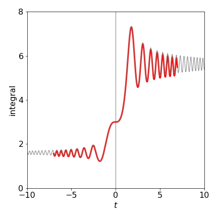
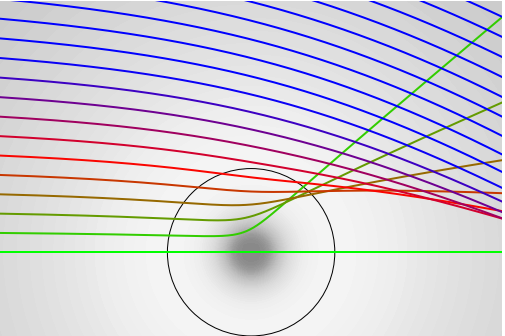
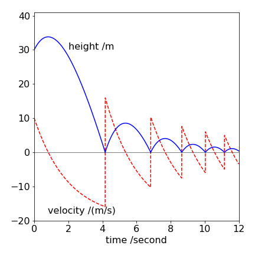

Solutions Q8 - 12¶
# import all python add-ons etc that will be needed later on
%matplotlib inline
import numpy as np
import matplotlib.pyplot as plt
from sympy import *
from scipy.integrate import quad,odeint
from scipy.optimize import fsolve
init_printing() # allows printing of SymPy results in typeset maths format
plt.rcParams.update({'font.size': 16}) # set font size for plots
Q8 answer¶
(a) The variables in the equation can be separated and then integrated giving, \(\displaystyle \ln(y)=\int \sin(t^2)dt+c\).
However, the right-hand side cannot be integrated analytically but is known in terms of a Fresnel function, which is itself an integral and which can only be evaluated numerically. You could now integrate this integral using Simpson’s rule, for example, over the range \(-8 \to 8\) then use \(t_0 = 0\), \(y(t_0) = 3\) used to determine the integration constant \(c\) which is \(\ln(3)\).
(b) The results of the calculation using the Euler method with the code below, together with the solution from part (c), is shown in Fig. 31. The subroutine is modified slightly to allow the time increment to be negative to allow calculations when \(t \lt 0\)
#-----------------------------
def Eulerf(f,t0,y0,maxt,N,s):
Eulery= np.zeros(N,dtype=float)
dtime = np.zeros(N,dtype=float)
h = (maxt-t0)/N
if s < 0:
h = -h
y = y0
t = t0
Eulery[0]= y0
dtime[0] = t0
for i in range(1,N):
y = y + h*f(t,y)
t = t + h
Eulery[i] = y
dtime[i] = t
pass
return Eulery,dtime
#---------
# sample calculation remove hashes to see plot
dydt = lambda t,y : y*np.sin(t*t)
t0 = 0.0
y0 = 3.0
maxt= 7.0
N = 500
soln0,time0 = Eulerf(dydt,t0,y0,maxt,N,0) # positive t
#plt.plot(time0,soln0,color='red',linewidth=3)
soln1,time1 = Eulerf(dydt,t0,y0,maxt,N,-1) # negative t
#plt.plot(time1,soln1,color='red',linewidth=3)
#### now do same calculation using built in differential equation integrator odeint
#-------------------------
def dY_dt(Y, t): # returns dY/dt, etc only used in odeint()
dAdt = Y*np.sin(t**2) # equation here
return dAdt
#--------------------------
C0 = 3
numt = 500
tp = np.linspace( 0,10, numt ) # time as initial, final then number of points
solnp = odeint(dY_dt, C0, tp ) # solve equations numerical integration
#plt.plot(tp,solnp,color='grey',linewidth=1)
tn = np.linspace( 0,-10, numt ) # now do same for negative time
solnn = odeint(dY_dt, C0, tn ) # solve equations
#plt.plot(tn,solnn,color='grey',linewidth=1)
#plt.show()

Figure 31. The Euler method with \(N = 500\) over the range \(-8 \to 8\) (red line). The faint grey line is the numerical solution from part (c) also with initial value \(y(0) = 3\).
Q9 answer¶
Use Algorithm 13 with the potentials \(U(r)=\alpha/r\) or \(U(r) = \alpha e^{-\beta r}/r\), and initially choose \(\alpha\) and \(\beta\) to be unity. Do not forget to change the force as necessary in the calculation. In other respects, the calculation is similar to that in the example. As these potentials are repulsive when \(\alpha >0\) the trajectories should be scattered like a hard sphere. When \(\alpha \lt 0 \) the Yukawa the potential is both attractive and repulsive, but in a gentler way than for the L-J potential. The result is shown in the next figure when \(\alpha=-1,\; \beta = 1\). The grey-scale shows the magnitude of the potential as a ‘density’. The circle represents where the potential has its minima.

Figure 31a. Scattering from a Yukawa potential \(U(r) = \alpha e^{-\beta r}/r\) with \(\alpha = -1,\, \beta = 1\). The impact parameter varies from \(d = 0\) and increments in steps of \(0.25\).
Q10 answer¶
Using the result of question 7, \(\displaystyle \chi=\pi-2\tan^{-1}\left( \frac{1}{\sqrt{d^2/b^2-1}}\right)\)
differentiation wrt. \(b\) can be performed directly, using the standard result
or by using Sympy gives, after considerable algebraic simplification
The differential cross section becomes \(\displaystyle I(E_0,\chi) = \frac{b\sqrt{d^2-b^2}}{2\sin(\chi)}\).
In the next step substitute for \(b\) using the equation for \(\chi\) above. This produces a difficult looking equation
The trig terms simplify considerably (using the standard form \(\sin(2x)=2\sin(x)\cos(x)\)) and this produces the nice result
As expected by intuition, the result does not depend on the angle \(\chi\) because the interaction between the particles is that of a hard sphere.
Q11 answer¶
Use the Verlet algorithm with values as in equation 30. The initial velocity is +10 and is positive so that the ball is thrown upwards.
# Question 11 Verlet method, ball bouncing under gravity
y0 = 30.0 # metres initial conditions
v0 = 10.0
c = 0.5 # damping constant, 1/ second; see question
t = 0.0
dt = 0.005 # seconds
g = 9.8 # m/s/s
n = 2500
height= np.zeros(n,dtype=float)
atime = np.zeros(n,dtype=float)
velo = np.zeros(n,dtype=float)
height[0]= y0
atime[0] = t
velo[0] = v0
accln = -(g+c*v0)
v1= v0 + accln*dt
y = y0
yold = y0 - v0*dt
for i in range(1,n):
ynew = 2*y - yold + accln*dt**2
v = (ynew - yold)/(2*dt)
yold = y
y = ynew
if y < 0: # bounce ?
y = -y # reverse values on bounce
yold = -yold
v = -v
pass
height[i]= ynew # save values
velo[i] = v
atime[i] = t
t = t + dt
accln = -(g+c*v)
pass
#plt.plot(atime,height,color='blue')
#plt.plot(atime,velo,color='red')
#plt.show()

Figure 32. Height and velocity of a ball initially thrown upwards and then bouncing but which suffering air resistance proportional to its velocity. The equation of motion is \(\displaystyle m\frac{d^2y}{dt^2}+mc\frac{dy}{dt}+mg=0\). \(c\) is the damping coefficient with units of s\({-1}\). The equation is solved using the Verlet method. If the initial height is large enough or the drag coefficient \(c\) is increased then the ball’s velocity becomes constant before bouncing due to the effect of the air resistance.
The height profile is what experience would dictate. The velocity initially decreases, reaching zero when the ball is at its highest point and then increases in a negative sense. However, the viscosity of the air offers resistance to the ball and its velocity reaches a maximum downwards (negative) value just before the ball hits the ground. The acceleration of the ball, which is the gradient of the velocity, is always decreasing. After bouncing, the acceleration is always changing and never reaches a constant value.
Exercise: Consider the problem of a stone being thrown upwards at \(10\) m/s from a height of \(50\) m and falling vertically into water. In air, the friction coefficient is \(1\), but \(100\) in the water. Calculate what happens.
Q12 answer¶
The answer is up to you to check!